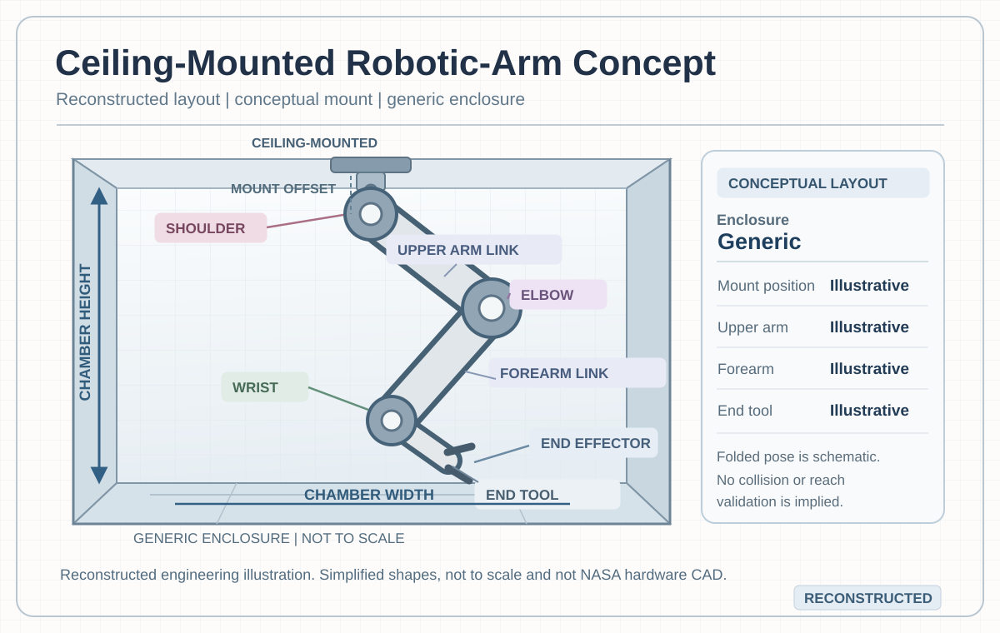

Robotic-arm feasibility for lunar-dust testing
Independently assessed an existing robotic arm for proposed lunar-dust testing in high vacuum, under NASA mentor oversight.
Documented result 34 hierarchical system requirements from six operating scenarios; preliminary 3.1 N·m shoulder self-load moment with documented limitations.
Read case study and scope notes →